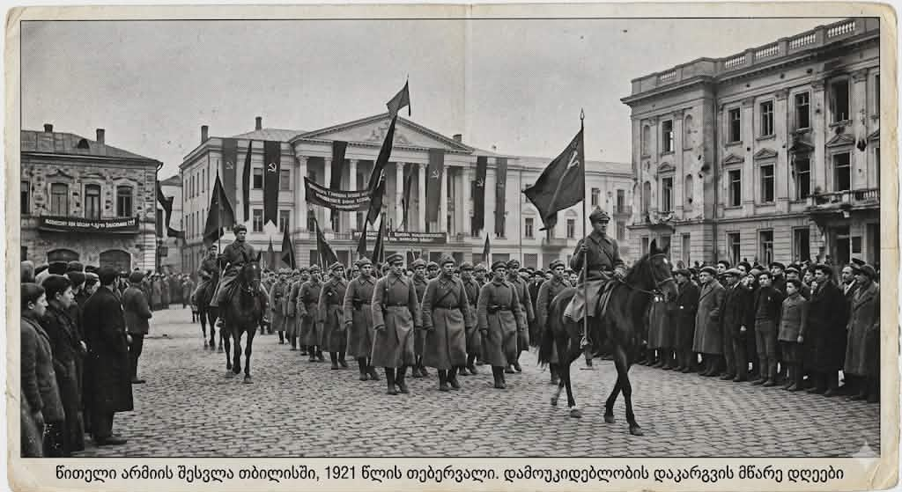

სასწრაფო ცნობა: ტფილისის ევაკუაცია! ჯარები მცხეთისკენ იხევენ, ბრძოლა გრძელდება!
"წითელი საოკუპაციო არმია დედაქალაქს უახლოვდება – რესპუბლიკა უკანასკნელ სისხლის წვეთამდე დაიცავს თავისუფლებას!"
კრიტიკული საათები დედაქალაქისთვის! მას შემდეგ, რაც მოსკოვმა ვერაგულად დაარღვია სამშვიდობო ხელშეკრულება და 12 თებერვალს ბორჩალოს მაზრიდან შემოიჭრა, წითელი არმიის უზარმაზარი ძალები ტფილისის კარიბჭეს მოადგნენ. გუშინ, 24 თებერვალს, მძიმე სტრატეგიული ვითარების გამო, მთავარსარდლობამ მიიღო უმძიმესი გადაწყვეტილება — ჯარებმა და მთავრობამ ქალაქი დატოვეს და მცხეთის პოზიციებზე გადაჯგუფდნენ, რათა მტერი ალყაში არ მოექციათ.
წინა დღეებში გამართული ბრძოლები ოქროს ასოებით ჩაიწერება ჩვენს ისტორიაში. 18 თებერვლიდან მოყოლებული, ქართველი ჯარისკაცები, სახალხო გვარდია და მოხალისეები მკერდით აკავებდნენ რუსეთის XI არმიის შემოტევას. მტრის ქვემეხების ხმამ ტფილისი ააზანზარა, მაგრამ ჩვენმა ბიჭებმა რამდენიმე იერიში სრულიად მოიგერიეს და მტერს უდიდესი ზიანი მიაყენეს. დედაქალაქის ქუჩებში გლოვა და ამავდროულად უდიდესი საბრძოლო სულისკვეთებაა.
მიუხედავად იმისა, რომ დღეს, 25 თებერვალს, საოკუპაციო ძალების ნაწილები ცარიელ ქალაქში შემოდიან, მთავრობა აცხადებს: ეს არ არის ომის დასასრული! დასავლეთ საქართველო მყარად უჭირავს რესპუბლიკის შეიარაღებულ ძალებს. ბრძოლა გრძელდება ქვეყნის შიგნით და საზღვრებზე. სამშობლო საფრთხეშია, მაგრამ თავისუფლების იდეას ვერანაირი წითელი ხიშტი ვერ მოკლავს!